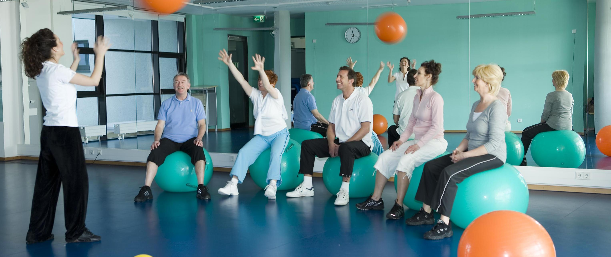

Реабилитация после раковых заболеваний
Онкологическая реабилитация направлена на Пациентов завершивших первичное лечение рака и желающих улучшить
свое физическое и психическое здоровье.
Каждый пострадавший по-своему реагирует на проблему рака и его лечение. Таким образом, в соответствии с
комплексным и междисциплинарным подходом цели лечения определяются совместно, чтобы обрести новые силы для
возвращения к профессиональной и личной повседневной жизни. Реабилитация рака предлагает широкий спектр
лечебных и диагностических мероприятий. Основное внимание уделяется лечебной тренировочной терапии / спорту,
сенсомоторным навыкам (особенно для пациентов с выраженными симптомами полинейропатии) и психосоциальной
поддержке.

Физиотерапия
Программу упражнений с пациентом проводят физиотерапевты с разной дополнительной квалификацией:
Лечебная гимнастика: под руководством укрепляются ослабленные мышцы и улучшается подвижность. Снова
прорабатываются паттерны физиологических движений, включаются тренировка сердечно-сосудистой системы, а также
координирующие и мобилизационные аспекты. Во время этой тренировки для всего тела используются различные
вспомогательные средства, такие как мячи, палки или тера-ленты.
Силовые тренировки: на разных тренажерах используются разные упражнения для наращивания мышц. Это означает,
что в качестве превентивной меры можно также избежать жалоб на физическое состояние. Помимо наращивания
мускулов, также увеличивается сила и выносливость. Тренировка на выносливость: упражнения на велоэргометре и
скандинавская ходьба позволяют стабильно тренировать выносливость.
Тренировка координации: различные навыки координации (например, равновесие, ориентация, ритм, способность
реагировать) тренируются со вспомогательными средствами или без них (мячи, диск MFT, BalancePad и т.
Д.)
Эрготерапия
В процессе реабилитации после рака трудотерапия фокусируется на повседневной деятельности пациента. Для того,
чтобы делать это удовлетворительно в повседневной жизни, требуются разные способности и навыки. Именно на эти
способности и навыки и сосредоточена трудотерапия. Физические упражнения и активность целенаправленно
способствуют благополучию и здоровью.
Индивидуальная терапия: с помощью специальных методов (например, тренировки мелкой моторики, тренировки
чувствительности, когнитивных тренировок, рекомендаций по эргономике рабочего места) достигаются
индивидуальные, актуальные для повседневной жизни цели.
Терапевтический семинар: с целевым предложением, в котором «быть активным» и «получать удовольствие» находятся
на переднем плане, можно получить новый положительный опыт на всех уровнях.
Клиническая психология и психология здоровья
Психологическое консультирование / лечение: Психологические беседы имеют успокаивающее действие и помогают
найти личный способ борьбы с раком и текущей жизненной ситуации. В психологической беседе один на один
предоставляется время и пространство для тем, с которыми пациент в настоящее время имеет дело или с которыми
хотел бы иметь дело. Эти темы для разговора могут включать планирование поведения в отношении здоровья,
укрепление индивидуальных ресурсов, преодоление болезней, личных, семейных или профессиональных кризисов.
Психологический тренинг: во время тренинга передаются психологические знания о здоровье, которые помогают
справиться с раком и связанными с ним стрессовыми факторами.
Мы используем гипнотерапию Марисы Пир. «Ум верит в то, что вы ему говорите. Каждая мысль вызывает физическую
реакцию в теле… ». Мариса Пир, основательница Rapid Transformational Therapy (RTT) утверждает. «Ваше
воображение - самый мощный инструмент, которым вы владеете, а ваш разум обладает самым мощным целебным
потенциалом на планете».
Мариса Пир преодолела рак и свидетельствует о том, что сила ума была ключом к ее быстрому выздоровлению. В
одной из книг Мариса делится своей историей о том, как «больным раком полезно визуализировать сокращение
опухоли и представить, как тело прекращает кровоснабжение рака». Это исходит из ее личного опыта, а также из
своей практики. Когда она делилась своим собственным опытом диагностирования рака, она активно представляла,
как рак замирает и сокращается. Мариса Пир удивила врачей тем, насколько быстро ей удалось полностью
выздороветь, и теперь она обучает пациентов, как использовать клеточную терапию, исцеляющий вихрь и другие
аспекты быстрой трансформационной терапии ™ (RTT) для достижения результатов, изменяющих жизнь.
Рекомендации по питанию
В ходе опухолевого заболевания и его лечения могут наблюдаться изменения потребностей в питании. В
онкологической реабилитации конкретные лечебные диетологические мероприятия обсуждаются и согласовываются один
на один с диетологом.
Лечебный массаж / специальный массаж
Лечебный массаж завершает программу реабилитации, расслабляя мышцы и воздействуя на кровообращение, но также
стимулируя подвижность и ловкость. По показаниям также можно использовать специальные виды массажа, такие как
ручной лимфодренаж, массаж рефлекторной зоны (стопы) или массаж соединительной ткани.
Йога
Государственным Институтом Онкологии США (NCI) были проведены исследования по воздействию йоги на женщин,
больных раком молочной железы. В первом этапе исследований принимало участие шестьдесят пациенток с диагнозом
«рак груди». Половина из них регулярно занимались йогой в течение двух месяцев, вторая половина женщин не
получала никаких дополнительных нагрузок. Результаты исследований показали, что у женщин, практиковавших йогу,
улучшилось самочувствие, повысилась активность, наблюдался прилив сил и полное отсутствие депрессивных
настроений. Второй этап эксперимента повторили уже с участием ста двадцати женщин, половина из них занималась
йогой, а вторая - нет. Результаты подтвердились, кроме эти исследования показали, что женщины из первой
группы, которая занималась йогой, физически более сильны и лучше переносят побочные эффекты лечения. Йога при
раке груди помогает больным бороться с последствиями лечения рака (химиотерапией, облучением,
постоперационными проблемами). - Повышает тонус и снимает сонливость, дает силы для дальнейшей борьбы с
болезнью. - Дыхательные практики помогают справляться с тошнотой и головокружением, придают спокойствие и
уверенность. Если заниматься йогой даже в течение короткого времени, это все равно дает ощутимый эффект.
Занятия сочетают в себе медитации, выполнение поз (асан) и дыхательных практик (пранаям). Медитации крайне
важны для больных онкологическими заболеваниями. Данная болезнь тяжело переносится организмом и, по сути,
является стрессом, который бьет по иммунитету женщины. Проводя медитации хотя бы в течение двадцати минут в
сутки, можно добиться того, что от стресса не останется и иммунитет будет защищен. Хороший иммунитет – залог
выздоровления. Аюверда- как сопроводительная терапия рака Когда иммунной системе нужна поддержка.
«Это тайно выросло во мне», «Я просто почувствовал себя немного слабым», «Я боюсь за свою жизнь» Больные раком
переживают свое угрожающее состояние в этом или чем-то подобном.
Каждый день у здоровых людей развивается около 1000 дегенерированных клеток. У больных раком, однако,
собственные защитные силы организма не смогли обнажить их и обезвредить с помощью иммунных клеток. Вместо
этого раковые клетки бесконтрольно размножаются и могут постепенно разрушать жизненно важные ткани.
Кроме того, раковые клетки могут распространяться на ближайшие лимфатические узлы или органы дальше и
продолжать там свой рост.
Как ведическая медицина относится к раку?
Согласно Махариши Аюрведе, рак начинается с потери естественного баланса.
Из-за нашего образа жизни постоянно образуются остатки метаболизма и токсины, называемые Ама в Аюрведе,
которые в случае рака особенно накапливаются в определенной точке тела. В то же время, иммунная система
человека с годами обычно снижается в результате недоедания и недоедания, а также токсинов окружающей среды;
почти всегда в сочетании с эмоциональным стрессом.
Однако, согласно Аюрведе, нет двух одинаковых пациентов, и поэтому все виды рака разные. Аюрведический подход
в нашей клинике основан на целостном подходе.
Все больше и больше пациентов обнаруживают, что одних обычных методов лечения недостаточно. Они понимают, что
путь к выздоровлению должен пройти на всех уровнях. В случае рака, особенно, необходимо одновременно учитывать
множество факторов, чтобы придать новый импульс собственной защите организма. Систематическое выведение
токсинов, снабжение жизненно важными веществами с помощью высококачественной диеты и травяных препаратов,
особенно для расщепления опухолевых клеток, так же важны, как и балансировка нервной системы - и все это
специально для вас. Важно привести естественные регулирующие принципы в необходимый баланс. Чтобы ваши
естественные способности к самовосстановлению снова возобладали.
Терапия с использованием тибетских поющих чаш
Первые чаши из металлического сплава начали использовать на Дальнем Востоке 6000 лет назад. Тибетские поющие
чаши - загадочное звуковое явление, обнаруженное «духовными туристами» в Гималаях. После китайского вторжения
в Тибет чаши появились также в Европе и США.
Звук тибетских чаш и гонга гармонизирует и расслабляет левую и правую части мозга. Звук снимает напряжение на
всех уровнях и способствует детоксикации организма. Ощущения утихают после ухода, причина становится понятной.
Вибрации звука положительно влияют на тело еще долгое время после окончания замаха.
Звуковая терапия - один из самых быстрых и эффективных способов восстановить гармонию и расслабление. Вся
музыка имеет терапевтический эффект, но гонг обладает самой сильной энергией. Звук использовался на протяжении
тысячелетий как средство пробуждения глубоких состояний сознания, расширения сознания и устранения
энергетического дисбаланса. Недавно нам стала доступна и древняя китайская терапия вибрирующими звуками гонга.